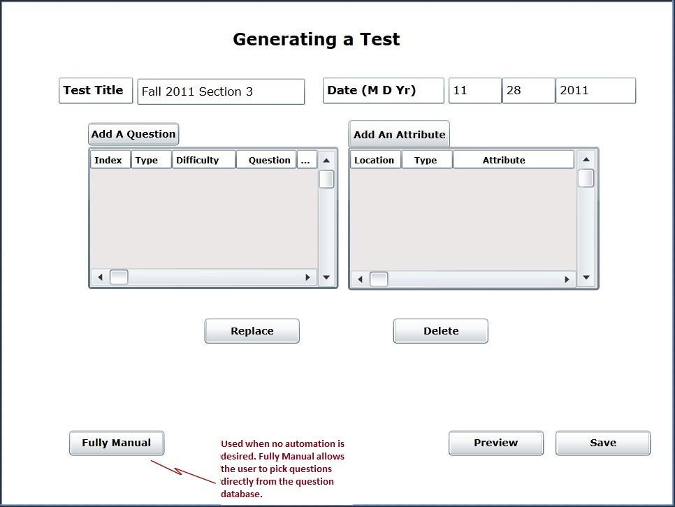

To generate a test an assumption is made that the question database has a substantial number of questions already entered into it (complete with answers). The Question Database is discussed in section 2.3. Figure 2.2.1 shows the initial screen the user is presented with upon clicking the Generate a Test tab or link on the welcome screen.

Figure 2.2.1: The front page the instructor is presented with while generating a test.
To access the generate a test page the user clicks the "Generate a Test" tab at the top of the screen, or alternatively the "Generate a Test" link on the welcome screen. Upon clicking one of the two links, the user is presented with an overview of the test he is creating (see Figure 2.2.1). Initially all fields and information boxes will be blank.
There are two fields side by side at the top of the page. These are:
Title: A string containing a short description for the test the user is creatin.g
Date: The date the test is being created on. This is composed of three text entry boxes pertaining to the month, day, and year (4 character) repectively.
There are two main sections below these fields. The first section on the left contains information about the questions that have been added to the test. At the top there is a button that opens a new dialog which allows the user to add a question. This dialog will allow the user to use two levels of lazyness, this process is described in section 2.2.1 and 2.2.2. Below the button is an information field that contains the questions added to the test currently. The user has the ability to scroll left and right as well as up and down and view more detail about these questions. The columns in this box contain the details (type, difficulty, question text, answer text, etc.) about the question. This is similar to the view the user has in the question database. The one difference is the first column which contains the index of the question (order on the test). The user has the ability to click and move any question to reorder them. The indexes will be adjusted automatically.
The second section to the right is where the user can add attributes to the test. An attribute is any additional information the user wants to add to a test that is not contained in a question. These will be discussed further in section 2.2.4. There is an add button above an information field similar to the adding a question section. The layout is the same. When the user clicks the add button a new dialog is opened. The one difference is there is no index column in the information box for an attribute. The first column contains the location on the test where the attribute is to be displayed.
Below these two sections are two buttons. The user can select either a question or and attribute and click on one of the buttons:
Replace: Will open the add dialog (adding a question, or an attribute depending on the selection) and the selected object will be replaced .
Delete: Will remove the selected object from the test.
Below these buttons on the left side of the page is a button titled Fully Manual. When the user wants to select a question directly from the database, that is, he does not want any auto generation, he can click here and the fully manual dialog will open. This is discussed in section 2.2.3.
To the right of this button is a preview and a save button where the user can preview the test and save it to the test database respectively.